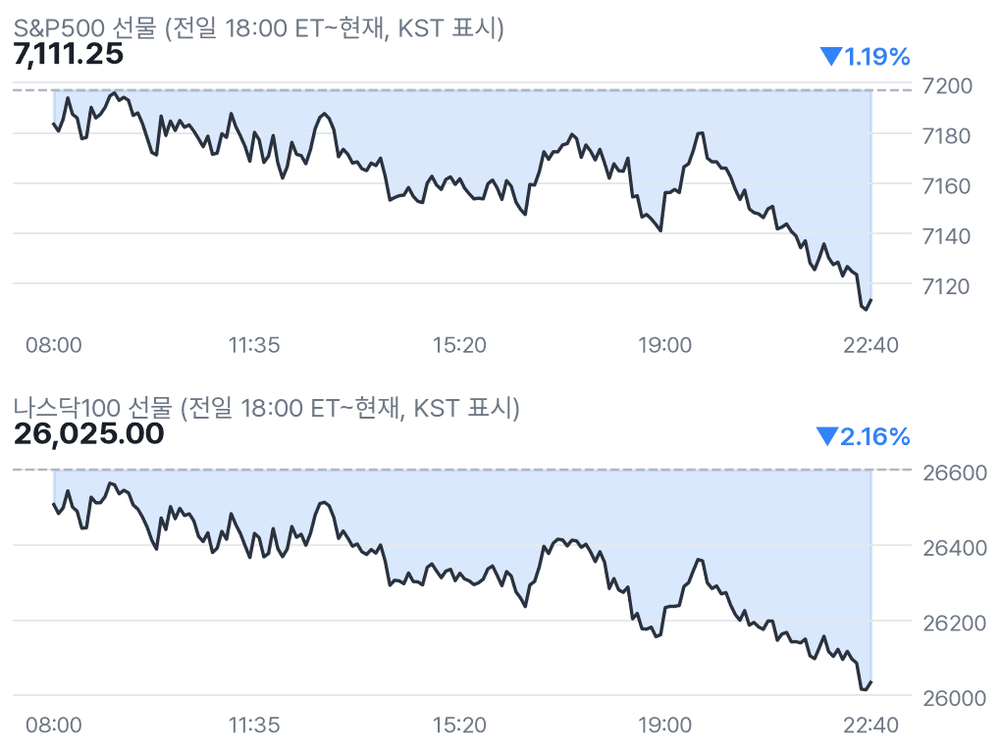
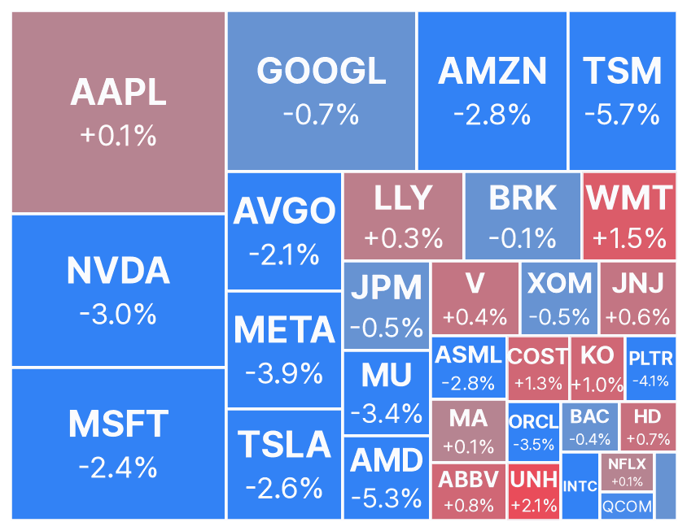
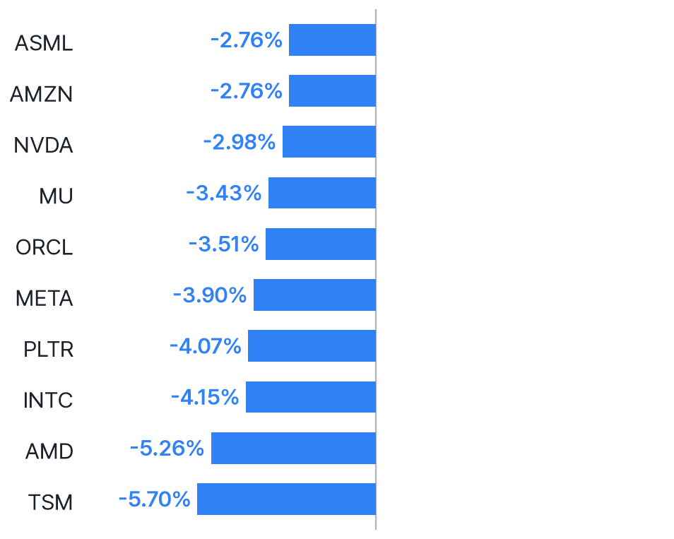
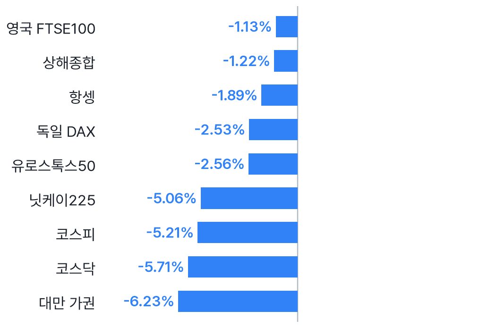
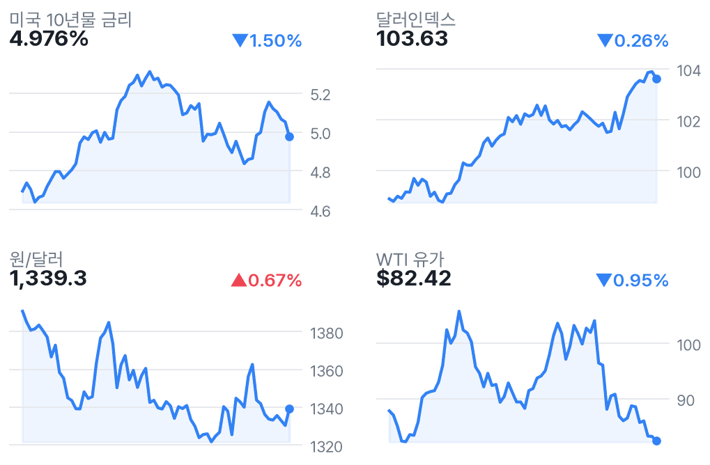

나스닥100 선물 2.16%↓, AI주 매도 지속
✅ 핵심 요약
- 앤스로픽 장전 약세에 AI주 매도 지속. 선물은 나스닥100 -2.16%, S&P500 -1.19%.
- TSMC -5.70%·AMD -5.26%·엔비디아 -2.98%로 반도체주 낙폭이 두드러짐.
- VIX 31.43(+10.51%)로 상승한 가운데 월마트는 장전 +1.48%로 상대 강세.
- 수집 일정상 08:30 ET 고중요도 미국 지표 없음. 자정 소비심리 확정치 예상 51.7.
📊 주요 지표
S&P500 선물
7,111.25
▼1.19%
나스닥100 선물
26,025.00
▼2.16%
다우 선물
48,939
▼0.49%
러셀 선물
2,648.80
▼0.54%
VIX
31.43
▲10.51%
미국 10년물
4.976%
▼1.50%
달러인덱스
103.63
▼0.26%
원/달러
1,339.3
▲0.67%
WTI
$82.42
▼0.95%
금
$3,563
▼3.33%
비트코인
$61,740
▼0.26%
유로스톡스50
5,957.59
▼2.56%
🧭 시장 해석
앤스로픽이 상장 이튿날 장전에서 밀리며 AI주 투자심리가 더 위축됐다. 대만 가권(-6.23%)·코스피(-5.21%) 급락에 이어 미국 장전에서도 TSMC·AMD·엔비디아가 동반 하락했다.
미국 10년물 금리가 4.976%로 내려도 VIX는 31.43으로 뛰었다. 금리 하락에도 기술주 매도가 이어진 만큼, 개장 후 반도체 낙폭이 줄어드는지와 자정 소비심리·기대인플레이션 발표 뒤 금리 반응이 관건이다.
인튜이트 약세, 월마트 강세
인튜이트는 연간 매출 전망을 낮추고 메일침프 매각 합의를 발표한 뒤 장전에서 약세를 보였다. 반면 월마트(+1.48%)는 전날 연간 실적 전망을 높인 데 이어 주요 증권사 목표가도 올랐다.
📈 차트
미국 지수 선물 야간 흐름

점선 = 전일 정산가
빅테크·대형주 프리마켓 히트맵

전일 종가 대비 프리마켓 현재가 · 타일 크기 = 시가총액
프리마켓 변동 상위 10 (대형주)

변동폭 절대값 기준
유럽(장중) · 아시아(마감) 증시

현지 기준 전일 대비
금리·달러·원화·유가 (3개월)

우측 상단 = 전일 대비
🏦 애널리스트 · 리서치
- TSLA — HSBC, ‘비중축소’→‘보유’, 목표가 $157→$359HSBC는 의견과 목표가를 함께 높였지만 테슬라는 장전 -2.63%.
- WMT — Piper Sandler, ‘비중확대’ 유지, 목표가 $128→$138투자 의견은 유지하고 목표가를 높였다.
- WMT — Morgan Stanley, ‘비중확대’ 유지, 목표가 $125→$135파이퍼 샌들러와 마찬가지로 목표가를 높였다.
미국 대형주 의견·목표가 변경 3건 (Yahoo)
- 의견 상향TSLA · HSBCReduce → Hold · 목표가 $157 → $359 · 11/20 21:38 KST
- 목표가 상향WMT · Piper SandlerOverweight · 목표가 $128 → $138 · 11/20 22:23 KST
- 목표가 상향WMT · Morgan StanleyOverweight · 목표가 $125 → $135 · 11/20 22:02 KST
📰 주요 뉴스
-
대형 상장이 AI주 매도세를 진정시키지 못했다.MarketWatch
-
연간 매출 전망 하향이 장전 주가를 압박했다.MarketWatch
-
대중 기술 규제를 둘러싼 불확실성이 남아 있다.CNBC
미국·글로벌 헤드라인 18건
-
MarketWatch · 11/20 22:48
-
CNBC · 11/20 22:47
-
CNBC · 11/20 22:47
-
CNBC · 11/20 22:36
-
CNBC · 11/20 22:29
-
CNBC · 11/20 22:25
-
CNBC · 11/20 22:20
-
CNBC · 11/20 22:15
-
The Guardian · 11/20 22:14
-
CNBC · 11/20 22:11
-
MarketWatch · 11/20 22:00
-
MarketWatch · 11/20 21:59
-
CNBC Markets · 11/20 21:58
-
Barron's · 11/20 21:49
-
MarketWatch · 11/20 21:45
-
MarketWatch · 11/20 21:43
-
WSJ Markets · 11/20 21:37
-
WSJ Markets · 11/20 21:32
애널리스트 관련 헤드라인 12건
-
Quantisnow · 11/20 22:45
-
The Globe and Mail · 11/20 22:24
-
Quantisnow · 11/20 21:45
-
Quantisnow · 11/20 21:40
-
Quantisnow · 11/20 21:40
-
Quantisnow · 11/20 21:40
-
Quantisnow · 11/20 21:40
-
Quantisnow · 11/20 21:40
-
MarketWatch · 11/20 21:24
-
The Globe and Mail · 11/20 21:22
-
Benzinga · 11/20 21:20
-
Benzinga · 11/20 21:10
국내 헤드라인 4건
-
뉴스핌 · 11/20 22:22
-
뉴스핌 · 11/20 20:54
-
CBC뉴스 · 11/20 20:50
-
스페셜타임스 · 11/20 15:52
🗓️ 일정
경제지표·이벤트 (KST)
- 00:00🇺🇸 미국 Revised UoM Consumer Sentiment11/21 · 중요도 중간 · 예상 51.7 · 이전 51.0
- 00:00🇺🇸 미국 Revised UoM Inflation Expectations11/21 · 중요도 중간 · 이전 4.3%
- 02:00🇺🇸 미국 President Trump Speaks11/21 · 중요도 중간
👀 체크포인트
- 23:30미국 정규장 개장: 앤스로픽·반도체주 낙폭 축소 여부
- 00:00미시간대 소비심리 확정치(예상 51.7·잠정 51.0) 및 기대인플레이션(잠정 4.3%)
- 02:00트럼프 대통령 발언